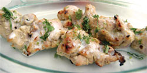

Chicken Malai Kebab

Description
Chicken Malai kebab are very smooth and succulent and literally melt in
the mouth. Murgh malai kebabs are mildly flavored withcream and cheese and
ginger garlic paste. Discover how to make chicken malai kabab by following
this easy recipe.
Ingredients
- 1 kg chicken (boneless)
- 30 ml malt vinegar
- 1 egg
- 60 gms processed cheese
- 10 gms green coriander (finely chopped)
- 100 ml oil
- 4 portions yield
- 15 gms salt
- 50gms ginger garlic paste
- 10 gms corn flour
- 10 gms green chili (deseeded)
- 120 ml fresh cream
- 50 gms butter
Steps
-
Clean and make boneless chicken pieces 60 gms approx. each of chicken
breasts and legs.
-
Marinate with salt, ginger, garlic paste and malt vinegar. Leave at
least for half an hour. Squeeze lightly against palms and keep aside.
-
In a tray, rub processed cheese with palm to a smooth paste. Add half
egg to it, a corn flour and mix them well.
- Add a part of cream to soften it.
-
To this mixture add the boneless marinated chicken lightly. Add chopped
green chili and green coriander stalks. Pour in remaining cream and mix
together. Let it rest for two to three hours in refrigerator.
-
Put the marinated chicken pieces on skewer and half cook in tandoor.
Take it out and hang it for ten minutes.
-
Baste it with refined oil and cooking butter mixture and put back in
tandoor till it gets light golden colour.
-
Take out a garnished platter, sprinkle with lemon juice, clarified
butter and kebab masala on top.
-
Serve accompanied with green coriander/ mint chutney, lachha onion,
lemon wedge along with onion kulcha.